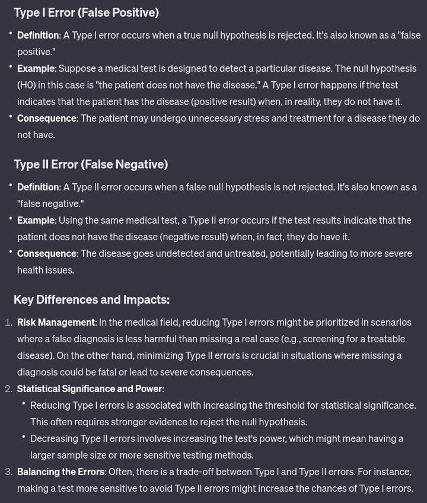

(a) Explain Type I and Type II errors in details while taking an example.

(b) Suppose we have a random sample \(X_1, X_2, ..., X_n\) where: \(X_i = 0\) if a randomly selected student does not own a sports car, and \(X_i = 1\) if a randomly selected student does own a sports car. Assuming that the \(X_i\) are independent Bernoulli random variables with unknown parameter \(p\), find the maximum likelihood estimator of \(p\), the proportion of students who own a sports car.